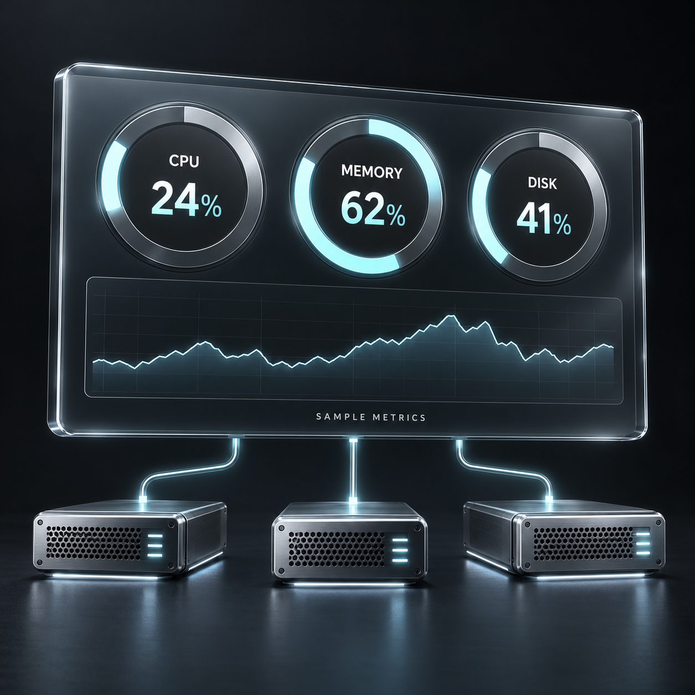

SIGNALINFRASTRUCTURE / AUTOMATION / OBSERVABILITY
LAB - 2026
Project SIGNAL
Infrastructure Automation & Observability Lab
VIEW LAB ARCHITECTURE ↗Lab project, not a production system.
A home lab I built to practise the work behind a NOC: building servers, deploying with Ansible and watching them with real monitoring. Eight virtual machines on VMware (seven RHEL 9.5 and one Windows Server 2022) run a small game service behind nginx, with RabbitMQ, MySQL and Redis. Prometheus, Grafana and the ELK stack watch all of it.
- 13 Ansible roles, tag-scoped plays, secrets in Ansible Vault
- GitHub Actions builds the application on every push
- 7 of 7 exporters up in Prometheus
- 5,955 Windows event log documents in Elasticsearch within minutes of starting Winlogbeat
- 4 dated journals of what broke and how it was fixed